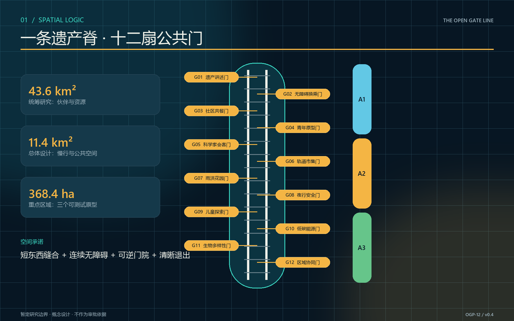
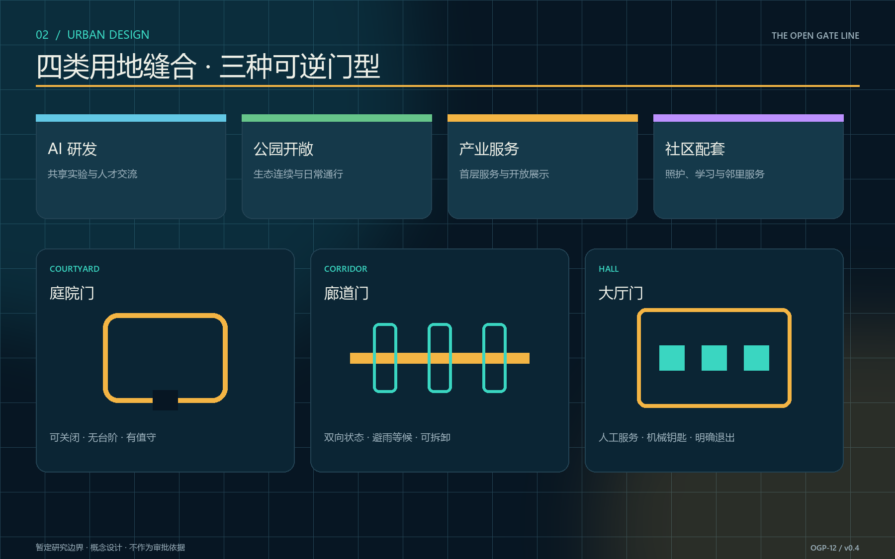
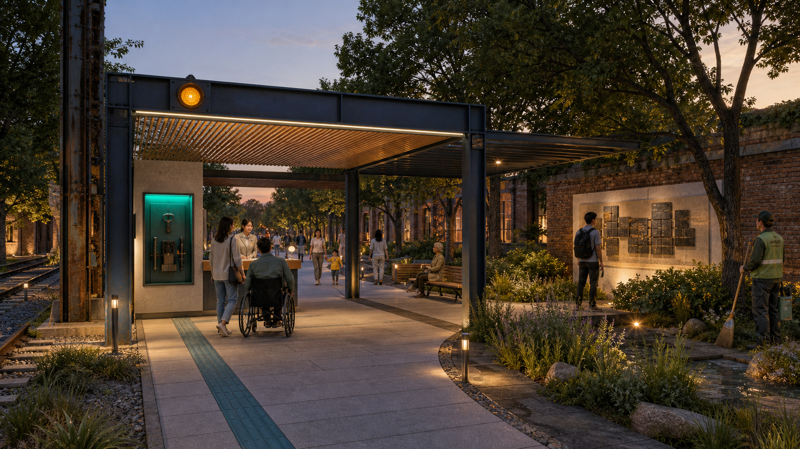

京张开门线 / THE OPEN GATE LINE
以三大定位、五大功能和三区两翼为战略总纲，以十二个有人值守、可关闭回退的公共门把京张遗产、AI 场景与长期运营连成可验证的城市界面。
京张开门线 / THE OPEN GATE LINE
一条遗产线，十二扇按时打开的门。不是先拆墙，而是先建立可审计、可回退、可持续运营的公共共享协议。
设计依据与资料清单
本方案以征集公告、智能体任务书、场地包、来源登记表和本地标准快照为依据 来源 来源 来源。两份项目文件的标准覆盖另见标准矩阵 标准 标准。范围事实使用场地包给出的统筹研究范围约 43.6 平方公里、总体设计范围约 11.4 平方公里、重点区域合计约 368.4 公顷；这些数字用于概念比选，不替代法定测绘。当前仓库没有组织方发布的精确官方多边形，提交的 site_boundary.geojson 与三处 key_areas.geojson 因而均是暂定研究边界 来源 来源 空间数据。
法定容积率、高度、建筑密度、绿地率、退线、道路红线、产权、市政容量与消防条件均未在公开包中形成可直接采用的地块控制值；方案不填造数字，相关指标标为待官方资料确认 指标 深度。全球案例只用于机制研究：one-north 的跨时段场地活动与试验平台、STATION F 的共享服务社区、Kendall Square 的公共空间网络 来源 来源 来源；Kalasatama 的生活实验室、Seoul AI Hub 的产学研平台、MaRS 的创新社区构成另一组参考 来源 来源 来源。其规模、绩效和制度不外推为京张事实。
本轮把方案放回真实城市背景。北京市公开规划材料将京张铁路遗址公园描述为西直门至北五环约 9 公里、约 70 公顷的连续绿廊，并提出打通 9 条城市支路和东西向慢行联系 来源。2026 年 7 月的公开报道记录二期新增 3 条慢行联系，周边约 70 个社区、45 万居民；这是有日期的公开背景，不是本团队踏勘或当前开放证明 来源。osm-context-20260822.json 冻结了暂定范围内 1,978 个铁路、道路、水体、绿地和车站源要素，并以约 1—2 米容差概化线条供复现显示；它只回答“设计叠加在什么城市关系上”，不进入红线、用地面积、建筑量或绩效计算 来源 指标 [assumption:A-OSM-CONTEXT-001]。


三层范围工作框架
三层范围由同一条“开门协议”贯通，但每层回答不同问题 深度。统筹研究范围识别高校、企业、社区、轨道遗产与公共服务之间可共享的能力，形成伙伴和政策清单；总体设计范围组织遗产公园慢行脊、十二个共享时段门及蓝绿公共空间；三个重点区域把门的空间、运营、数据与安全条件做成可测试原型。设计对象不是一条连续商业街，而是一套在不同时间、面对不同人群、以不同权限打开的公共阈值系统。
每扇门由四层组成：可辨识的门架和无障碍界面；预约、到达与容量提示；现场值守、巡检和应急关闭；季度公开评估与退出机制。开放从来不是默认状态：产权主体、消防、治安、文保、无障碍、保险与运营协议任何一项未满足，节点就保持“观察”或“关闭”。边界替换时，所有空间层和面积指标重新生成，而协议结构仍可保留 来源 深度。
三个尺度的验收分别是：研究层形成伙伴—资源—时段目录；总体层形成连续慢行、清晰门序列和可读公共空间；重点层完成至少三项带停止条件的现场验证。十二个概念节点由提案场景卡与指标表共同记录，不表达现状产权或已获准开放 空间数据 指标。
统筹研究范围产业与未来城市研究
方案将任务书直接翻译为一张可核对的设计总纲。三大定位是：全球 AI 原生创新展示窗口、京张遗产与中关村创新精神交汇的城市客厅、可验证、可回退、可复制的城市 AI 试验场。五大功能是原点展示、技术服务、场景试验、公共体验和全球协作；三区是众智试验区、AI 原点区和京张公共文化区，两翼是中关村科技服务翼与小月河场景赋能翼。OGP-12 不是另一套平行口号，而是贯穿三区两翼、约束十二个公共节点的运行层 标准 深度。

品牌系统把两根铁轨、开放门框和信号灯合成为原创标志：深海军蓝表示遗产底座，琥珀色表示开放，青绿表示有人协助，红色表示暂停；状态同时通过文字和形态表达，避免只靠颜色。中英文名称、状态符号、导视、无障碍路径、开放日历、年度活动与荣誉碑刻共享同一语法。该标志不复制历史构件，不借用任何机构标识 深度。

产业策略从“再建一个园区”转为“让现有能力按合适时段可见、可达、可合作”。北部生命科学和高校资源、中部 AI 原点与创新企业、南部大钟寺文化商业资源通过开门日历形成三类交换：科研设施的受控参观与验证、创业服务与社区问题的双向翻译、文化内容与公共市场的共同策展 深度。中关村科技服务翼组织技术服务、人才、算力、数据权利与验证支持；小月河场景赋能翼把这些能力转成沿遗产公园可步行、可体验、可停止的公共任务。两翼均是概念性服务网络，不是已确定的机构、投资或新增建设体量。
六个案例机制的本地转译如下：one-north 启发“工作日晚间、周末不同场景”的时段编排；STATION F 启发把服务清单做成可理解的社区入口；Kendall Square 启发以公共空间网络而非单栋地标承载创新；Kalasatama 启发居民参与问题定义；Seoul AI Hub 启发教育、企业与研究平台的阶段性支持；MaRS 启发以伙伴网络提供连续服务。京张只采用“协议、日历、测试、复盘”四种轻机制，不复制土地制度或投资规模。
案例之后的生态图谱用土地、空间、产业、资金、人才、算力、数据、场景八类资源检查闭环：任何一个节点只有在场地权利、公共价值、专业安全、运营责任和退出资产同时明确时才可进入试开。未确认的企业或机构不会被画成已签约伙伴；具体主体只有在公开来源或正式授权后进入图谱 来源 来源 来源。

空间上建立“一线、三区、三院、十二门、两翼”：一线为京张遗产公园公共门槛脊；三区承接任务书布局；三院分别是众智试验门院、AI 原点翻译门院、大钟寺共养门院；十二门每区四处；两翼分别供给科技服务和连续场景。年度目标不承诺客流或产值，而以共享协议、无障碍任务成功率、取消与事故记录公开度、居民与设施方共同复盘率衡量 指标 深度。
总体设计范围城市更新与控规深度城市设计
总体结构以暂定总体边界内的南北遗产线为骨架，以东西向步行缝合为肋。土地用途图层采用 AI 研发、公园开敞、产业服务、社区配套四类概念分区，只作为方案结构，不构成地类认定或用地调整建议 空间数据 标准。其中“创新服务与共享配套”按 2026 年 8 月修正后的项目枚举使用 0904 其他商业服务业用地，不再误用代表湿地的 05；该代码只保持机器语义正确，不表达已获准改变用地。更新优先级是“留用—共享—微改—必要时新建”：先盘活首层、院落、连廊和边角空间，再讨论建筑增量。
十二门按三种空间原型实施：庭院门适合小型验证、课程和维修；廊道门连接慢行、展陈与公共服务；大厅门承载预约接待、社区议题与国际交流。每处都设置双向可见的开放状态、无台阶路径、等候避雨、照明和紧急关闭；设备采用可拆卸构造，避免把试验变成永久占用。建筑高度、体量、风貌以尊重遗产尺度、控制首层界面、避免压迫公园为原则，具体限值待控规与专业审查 深度。
控规深度采取“条件表”而非伪精确图则：每个节点在进入方案深化前核对权属、文保、消防、疏散、市政接入、噪声、营业许可、网络安全、个人信息和无障碍；未通过项明确责任人、补充材料与最晚决策点。总体数据保持 GeoJSON—指标—图件同源，可在官方边界到位后自动复算 指标 指标 指标。复算深度由专业矩阵单列校核 深度。

重点区域详细设计
中智园重点区设置 G01 遗产讲述门、G02 无障碍换乘门、G03 社区共餐门、G04 青年原型门，构成“测试门院”。空间采用可封闭小院、器材柜、观察席、连续坡道与清晰回退路线；TVS-01 以真实任务链测试从站点到门院的无台阶到达、识别、求助与退出。任何安全事件或路线底图与现场不符即停止测试。该区不预设任何具体机构设施已同意开放 [assumption:A-GATE-APPROVAL-001]。
AI 原点重点区设置 G05 科学家会客门、G06 轨道市集门、G07 雨洪花园门、G08 夜行安全门，构成“翻译门院”。一侧把研究、创业、照护、气候与夜行问题转成可验证任务，另一侧把模型能力、限制和数据责任翻译成公众可理解语言；TVS-02 以四周影子模式比较 AI 时段建议、公开轮换与现场名额，任何无法解释的群体分配差异或现场名额被侵占即停止。任何以生物识别作为默认通行手段的方案直接淘汰。
大钟寺重点区设置 G09 儿童探索门、G10 低碳能源门、G11 生物多样性门、G12 区域协同门，构成“共养门院”。自然游戏、能源观察窗、季节封育区与开放成果墙共同支持日常学习和跨区域协作；TVS-03 在暴雨传感器失效与夜间照明故障同时发生时切换人工巡检，五分钟内不能接管或安全路线中断即停止。三处地标分别是 G05“零号门”、G09“开门钟”和沿线“公共荣誉信号塔”，它们表达开放状态与共同维护，不制造宏大纪念物 深度。
三个代表节点进一步落实到人的尺度。G05 零号门以半室外会客台、双语信息面和可见人工台形成国际到达界面；G07 水尺门把下凹花园、人工水尺、溢流路线和避雨等候组合为可教学的气候节点；G09 开门钟把自然游戏、照护者视线、触摸式铁路构件和年度荣誉记录组合为公共记忆节点。三者都保留连续无台阶通行、遮雨、坐等、机械钥匙、固定导视和清晰退出。图示尺寸均为概念控制值，须经现场测绘、消防、文保、结构和无障碍专项深化，不构成施工图或工程可行性结论 深度 [assumption:A-GATE-APPROVAL-001]。


一次能淘汰自身方案的空间裁决
G05 零号门不再从单一造型直接进入深化，而是让同一任务、同一使用者和同一组概念条件生成三种 1:1 样机备选，再接受五道硬门：无设备普通路径净宽不小于 1.8 米；试验湾不占用公共路径；人工岗位同时看见入口与退出；最远急停到人工岗位不超过 25 米；构件可逆且有独立撤场路线 空间数据 指标 [assumption:A-PROTOTYPE-DIMENSIONS-001]。
ALT-A“中央跨线门”把门架与试验区压在公共路线之上，普通路径、试验占用和独立撤场三项失败，淘汰；ALT-B“双侧分散门”保住通行，却因值守视线断裂、最远急停距离 31 米而退修；ALT-C“单侧外挂门”把 2.4 米无设备路径、人工台、试验湾和撤场路线并列，五项全过，只进入专业深化而不是获准建设 指标 指标 指标。确定性脚本复算的结论为 1 淘汰、1 退修、1 深化；现场结果仍为 0 指标。


AI 创新生态、人才画像与 AI+ 场景
五类核心人物是：研究员林澄需要安全、可复现的真实场景；照护者周敏带儿童使用夜间与周末服务；行动不便的陈伯需要无台阶到达、可坐等候和人工求助；创业者兼国际访客 Maya 需要双语规则、临时展示和合作入口；设施管家韩师傅关心钥匙、能耗、清洁、保险和谁来收尾。方案用同一张门卡同时描述使用者收益与管理者负担，避免只为“创新者”设计 深度。
OGP-12：从“智慧节点”到公共运行协议
本次修订用 visual/assets/gate-protocol.json 将十二个场景升级为 OGP-12 京张开门协议 空间数据 指标。它与常见的“智慧园区平台”有三个根本差异：第一，空间不是传感器容器，而是每项算法的安全边界、人工接管点和恢复资产；第二，算法不追求统一画像或全域最优，而只处理一个被授权的公共任务；第三，协议从关闭状态开始，任何数据、值守、无障碍或安全条件不满足时，服务不升级、可以暂停并回退。十二门对应遗产讲述、无障碍换乘、社区共餐、青年原型、科学会客、轨道市集、雨洪花园、夜行安全、儿童探索、低碳能源、生物多样性与区域协同，完整记录由机器脚本复核。
状态机为“关闭 → 观察 → 试开 → 开放”，并允许从任何运行状态进入“暂停”或“回退”。AI 可以建议是否具备条件，却不能把状态推进到试开或开放；这两个动作只由门卡列明的人工责任人签发。六条不可协商底线是：不做生物识别、不做个人信用评分、不自动拒绝准入、不导出个人原始轨迹、始终保留可达的人工服务、必须有公开日志与申诉渠道 [assumption:A-DATA-001]。协议审计要求人工权限、手工回退和最小数据全部达到 100% 覆盖 指标 指标 指标；二元启动条件、停止触发、责任主体与退出资产也必须逐门齐备 指标。
每项试点还必须与“无 AI、同人员、同场地、同开放时段”的基线并行比较：固定导视、纸本名额、人工排班和机械钥匙先构成可独立运行的公共服务；AI 只有在不降低安全、公平与可达性的前提下，证明能减少等待、漏报或重复劳动，才保留在下一轮。若没有净公共价值，节点保留空间改造和人工服务，撤除模型而不是撤除基本通行。
| 门 | 公共任务 | AI 的有限作用 | 最小数据 | 人工最终权限 / 无 AI 回退 | 关键停止条件 |
|---|---|---|---|---|---|
| G01 遗产讲述 | 双语、无障碍的铁路记忆 | 聚类问题，辅助起草 | 匿名问题标签、经审档案索引 | 策展人 / 纸本路线与人工讲述 | 事实错误 24 小时未改、版权争议 |
| G02 无障碍换乘 | 从站点连续到门院 | 提示无障碍路线与障碍 | 经审路径图、临时障碍、设备状态 | 交通值班经理 / 固定标识与人工协助 | 路图不符、电梯无替代、危险拥挤 |
| G03 社区共餐 | 保留现场名额的共餐 | 预测需求、建议时段 | 聚合预约数、天气、容量规则 | 社区经理 / 纸本预约与现场配额 | 食品安全、现场名额被侵占 |
| G04 青年原型 | 安全开放的原型工坊 | 项目匹配、检查表辅助 | 公开任务、技能标签、安全规则 | 安全官 / 公告板与人工审查 | 伤害近失、无安全官值守 |
| G05 科学会客 | 研究与公众双向翻译 | 问题聚类、会谈纪要 | 已同意问题、公开简介、议程 | 论坛编辑 / 主持人与人工纪要 | 撤回同意、敏感研究泄露 |
| G06 轨道市集 | 小商户公平轮换 | 摊位轮换与需求建议 | 商户类别、公开轮换、聚合人流 | 市集委员会 / 公开抽签与现金通道 | 分配偏差、支付排斥、小商户配额失守 |
| G07 雨洪花园 | 可见、可教学的雨洪维护 | 降雨提示、维护排序 | 公共天气、水位等级、工单状态 | 排水值班员 / 水尺与人工巡检 | 红色水位、传感与人工不符 |
| G08 夜行安全 | 连续照明与人工求助 | 设备异常、聚合等候提示 | 非影像照明、求助点、等候等级 | 公园安全经理 / 固定时控与巡逻 | 暗段未修、求助点故障 |
| G09 儿童探索 | 不追踪儿童的自然游戏 | 按年龄段建议活动 | 主动选择年龄段、天气、设备状态 | 活动引导员 / 纸本活动卡 | 设备故障、发现儿童追踪 |
| G10 低碳能源 | 让运营能耗可解释 | 异常解释、情景建议 | 聚合能耗、天气等级、设备状态 | 持证能源经理 / 人工抄表与固定时程 | 仪表漂移、租户数据暴露 |
| G11 生物多样性 | 不暴露敏感点位的公民科学 | 辅助识别、维护提醒 | 经专家审定索引、粗网格、养护计划 | 生态评审组 / 专家记录与季节标牌 | 敏感点位泄露、栖息地干扰 |
| G12 区域协同 | 发布公共需求与开放成果 | 项目匹配、成果索引 | 公开需求、机构能力、获批成果 | 区域项目理事会 / 季度公开征集 | 排他准入、数据权利争议 |
四张模型卡与三项可复现实验
OGP-12 只允许四类窄任务模型：需求—等候建议器、无障碍路线建议器、公众问题聚类器、事件与能耗复盘器。每张模型卡都写明服务对象、禁止用途、输入字段、输出解释、人工审批、影子模式、漂移检查、停机和删除；任何模型都不能扩展为人群身份识别、个人风险评分或自动准入。数据留在任务边界内，优先使用等级、聚合数和经审索引；在试点批准前不接入真实个人数据。
TVS-01 招募 6 名不同通行能力的参与者，以交叉顺序比较人工路线与 AI 建议，关键任务全部完成且路线错误率低于 5% 才通过；TVS-02 运行 4 周影子模式，将 AI 时段建议与公开轮换、现场名额比较，任一群体分配差超过 10 个百分点或申诉超过 48 小时未处理即失败；TVS-03 模拟暴雨传感器丢失与照明故障，要求人工在 5 分钟内接管并保持安全路线连续。阈值是在获批试点中的验收规则，不宣称已经实测达标 指标。

用地、建筑规模与拆改留方案
概念用地结构由四个连续分区组成，服务“研发—公园—产业—社区”的横向缝合；现有分区图仅验证几何闭合与空间逻辑，不作法定分类结论。建筑策略以可逆首层改造为主：保留具有使用价值、文化线索或良好结构条件的建筑；对界面封闭但主体可用的建筑做开门、遮雨、无障碍和机电微改；拆除只在专业鉴定确认危房、严重阻断公共安全或无修复价值后讨论 深度。
当前 buildings.geojson 是概念建筑基底，用于计算设计示意的建筑占地约 310,807 平方米，不代表现状普查或获批建设量 指标 空间数据。总建筑面积和容积率保持未知，因为缺少楼层、法定边界和审批强度 指标。后续应以逐栋调查表补充年代、结构、产权、使用状态、首层可达性、消防和文保价值，再形成留改拆专题图。
门架统一采用深海军蓝结构、琥珀开放灯、青绿无障碍导向和石灰白信息面，形态抽象自铁轨、门框与信号，不复制历史构件。新建体量如确有必要，应集中于既有硬化地或低价值附属空间，保持公园侧通透；所有材料以可拆、可修、可替换为先。身份系统名称为“京张开门线 / THE OPEN GATE LINE”，口号是“到点开门，共同收门”。
交通、轨道、市政与公共服务设施
慢行系统沿南北遗产脊连续组织，并以十二门向两侧街区形成短而清晰的东西向连接 空间数据 深度。步行优先面连续、骑行在拥挤门前降速、无障碍路线不绕行；网约车和装卸在外围短停，不进入核心公共门院。与轨道站点的接驳位置需在官方红线、运营边界和客流数据取得后校核，本方案不标注未经核实的出入口位置。
市政采用“小接入、可监测、可断开”的节点包：独立计量电源、低眩光照明、可关闭给排水接口、公共网络与设备网络隔离、雨天临时排水、应急广播和机械钥匙。能源与环境数据只以节点级匿名汇总发布；任何传感器故障不应阻止人工开放。公共服务由卫生间、饮水、母婴、休息、急救、双语咨询和无障碍求助组成，开放时间与门状态同步 深度。
TVS-01 用预约上限、现场计数、排队长度和疏散时间判断容量；TVS-02 用任务完成率、求助次数和绕行距离判断无障碍；TVS-03 用活动前后步行轨迹的匿名分段计数判断冲突。阈值由消防、交通和无障碍专业人员在现场测试前签定，不由本概念方案臆定。任何事故、近失事件或投诉触发降级、复盘或关闭。

蓝绿空间、公共空间与城市风貌
蓝绿系统以遗产公园为连续生态底板，门节点只占用已硬化或可恢复的微空间。现有概念图层测得绿地率约 12.34%、公共空间率约 7.33%，只是当前提交几何相对于暂定边界的复算值，不是现状统计、规划指标或达标声明 指标 指标 空间数据。公共空间几何另行保存在结构化图层 空间数据。官方边界与控制指标到位后必须整体重算。
公共空间形成晨间通勤、午间学习、傍晚照护、周末展示四种时间剖面。门前保留阴影、坐凳、饮水、可见出口和儿童安全边界；雨水花园与乔木补植优先改善热舒适，但具体树种、土壤和海绵参数需专项设计。夜景只点亮门的状态和低位路径，避免大屏、强光与遗产背景竞争 深度。
城市风貌以“可读的轻介入”为原则：门框建立沿线连续识别，三座地标提供公共记忆，建筑本体保持材料真实性。开放灯的琥珀色表示“可进入”，青色表示“有人协助”，暗灯表示“未开放”；数字状态与现场实体必须一致。公众荣誉信号塔只展示共同维护的团队、时段和问题修复，不显示个人排名或行为评分。
下图是原创生成的概念场景，用于检验人本空间关系：轮椅使用者与陪同者沿连续导向进入，长者在树荫下休息，儿童与照护者共享可见空间，管理人员负责现场清扫与接管，机械钥匙、人工台、雨水花园和荣誉墙同时可见。它不是现场照片、现状调查、官方效果图或已实施承诺，不能作为边界、面积或工程依据。

同一座门按白天、夜间、降雨、活动和故障五种状态复核。白天保证自然通行与人工咨询；夜间依靠低位照明和可见求助；降雨时先确保雨棚、排水和人工水尺；活动时保留步行、消防通达与现场名额；故障时关闭 AI 建议，由固定导视、纸本规则、机械钥匙和现场值守接管。只有安全条件失守才暂停公共门，算法故障本身不应让基本通行消失 [assumption:A-DATA-001] 深度。

更新项目清单、实施政策与分期计划
一期（0—12 个月）先完成 P01—P04 与 P08：核验官方边界和权属，建立遗产档案、连续无障碍骨架、雨洪—夜行安全底座和三座可逆示范门，同时把公开审计与申诉台先于算法上线。二期（1—3 年）实施 P05—P07，在三个原型通过 KPI 后才扩展到十二门；三期（3 年以后）实施 P09，并依据年度报告固化、迁移或退出节点 空间数据 深度。项目数量由协议文件核对 指标。
首 100 天不以“上线 AI”为终点，而以五个可核验工作包为交付：第 1—20 天冻结官方底图、权属与审批问题清单；第 21—40 天完成 1:1 胶带放样、轮椅与推车通行、视线和急停步测；第 41—60 天搭建 ALT-C 可逆无设备样机；第 61—80 天运行无 AI 基线并公开取消原因；第 81—100 天才进行影子模式比较并由公共利益评审组作出保留、退修或撤除决定 空间数据 指标。任何实测值都要在获准现场后另行登记，当前包没有把概念尺寸伪装成实测。
| 项目包 | 牵头责任类型 | 成本等级 | 开工门槛 | 阶段验收 / 退出资产 |
|---|---|---|---|---|
| P01 遗产底图与公众档案 | 文保与公园团队 | L | 权利与事实审查通过 | 可追溯档案索引；争议时保留经审数据 |
| P02 连续无障碍骨架 | 交通—公园联合组 | H | 路线审计、消防通达通过 | 全链任务通过；保留无障碍路径与标识 |
| P03 雨洪与夜间安全底座 | 市政—安全联合组 | H | 双故障演练通过 | 人工接管≤5 分钟；保留水尺、照明、求助点 |
| P04 三座可逆示范门 | 公共公园运营方 | M | 手工回退全部就绪 | 三项 TVS 通过；失败则撤回可移动构件 |
| P05 轨道市集与共餐网络 | 社区—市集联合组 | M | 公平准入规则公开 | 现场名额与小商户配额；保留共享家具 |
| P06 青年原型与科学会客厅 | 公共创新平台 | M | 安全与同意协议通过 | 安全完成与开放成果率；保留开放档案 |
| P07 十二门全线部署 | 区级项目办公室 | H | 三原型 KPI 达标 | 12 门协议覆盖；不达标则停在原型规模 |
| P08 开放审计与申诉台 | 独立公共利益评审组 | L | 申诉时限与公开日志就绪 | 48 小时响应；保留审计账本与模板 |
| P09 区域协同与年度开门季 | 区域项目理事会 | M | 公共价值与数据权利审查 | 开放成果发布；保留合作协议和项目索引 |
成本等级只表示相对优先级：L 为协议、培训或轻构件，M 为节点级空间与设备，H 为连续基础设施；没有公开工程量和价格依据，故不填造金额。政策工具使用共享时段协议、公益与商业时段分账、可撤销临时许可、共同保险、开放绩效补贴和小额维护基金。月度公布开放时段、取消原因与安全事件，季度复盘可达性和邻里影响，年度决定续约；任何节点不得因试点身份绕过文保、消防、规划或个人信息要求 深度。
区域协作不是抽象招商：北纬社区提供照护与无障碍反馈，未来科学城交换研究原型和公众科学内容，怀柔科学城共建科学仪器故事与公民科学，北京经开区对接产业试验和低碳运营，京津冀创新网络发布开放任务与可复制协议 指标。每年形成春季开门测试周、夏季夜行雨洪演练、秋季铁路遗产与科学节、冬季开放审计与贡献者年会四个固定节律 指标。贡献者荣誉墙只记录经验证的公共价值、版本和维护责任，不用个人行为排名；实体碑刻、证书或奖励均服从最终评审、审批与实际落成。

指标体系、面积复算与合规矩阵
指标分五组。空间底板记录暂定边界面积约 11,412,825 平方米、概念建筑占地约 310,807 平方米、概念绿地率 12.34%、概念公共空间率 7.33%和三处重点区 指标。任务书响应记录 3 大定位、5 大功能、2 条概念服务翼、6 个案例、8 类生态资源和 5 种体验状态 指标 指标 指标。网络能力记录 12 门、3 个测试场景、5 类人物和 3 个地标 指标 指标 指标。
协议完整性记录 12 条机器可读门卡、人工权限与手工回退 100% 覆盖 指标 指标 指标。实施能力记录 9 个项目包、5 条区域路径与 4 个年度事件，真实运营质量与公平指标保持待测。
空间项由提交的 GeoJSON 复算；协议项由 verify-gate-protocol.js 检查并输出 protocol-audit.json；空间比选由 verify-spatial-decision.js 检查并输出 spatial-decision-audit.json。后者必须同时证明三种方案均被评价、至少出现一次淘汰、退修和深化、五道硬门完整、首百日工作包齐备，而且现场验证记录数仍为 0 指标。运营、公平指标在获准试点前保持“待测”，不得填造基线；容积率同样保持未知 指标。所有数值都附来源文件、公式、单位、置信度与假设；完整任务覆盖见 compliance_matrix.json，标准覆盖见 standard_matrix.json，专业深度见 design_depth_matrix.json 深度。

风险、版权与合规说明
首要风险是边界、权属和控制条件缺失：暂定几何不得作为官方红线、精确面积或审批依据；取得官方图件后需替换并重跑拓扑、面积、图件和 PDF [assumption:A-BOUNDARY-001]。第二是“开放”被误读为已获许可：十二门全部是设计候选，必须逐点完成产权、文保、消防、治安、保险、运营和无障碍审查 [assumption:A-GATE-APPROVAL-001]。第三是技术越权：AI 不做最终准入判断，不以人脸或行为评分作为默认通行条件 [assumption:A-DATA-001]。
运营风险通过责任门卡、值守签到、机械回退、容量上限、事故记录和恢复预算控制；邻里风险通过噪声与夜间时段约束、投诉响应和季度复盘控制；生态风险通过轻介入、可逆基础和施工前树木水文调查控制。公众可以查看开放规则、数据字段、保存期和申诉路径。对未知项的诚实披露是方案的一部分，不是设计空白 深度。
除明确署名的 OpenStreetMap 背景要素外，所有文字、矢量化示意图、离线网页和排版脚本均为本次提交原创生成；封面使用 OpenAI 图像生成工具按原创提示生成。OSM 冻结快照依据 OpenStreetMap contributors、ODbL，仅作为底图参照；北京市政府公开材料只被摘要为有日期的事实，不复制其图片或大段文本。完整来源、许可和生成说明记录于 sources.json 与 report/copyright_statement.md。不嵌入未授权照片、第三方标志或受限字体文件。成果按仓库要求以 COMMUNITY-DISPLAY-ONLY 提交，该许可不覆盖 OSM 数据，也不转授案例网页或政府材料版权。
参考资料
- 北京市规划和自然资源委员会海淀分局，征集公告 来源。
- 征集仓库场地包与智能体任务书 来源 来源；来源登记与处理事实包 来源 来源。
- 《城市设计管理办法（试行）》、控制性详细规划与国土空间调查规划用地分类相关本地标准快照；本方案只依据仓库内登记的公开或本地快照 来源 建立合规检查，不把标准标题当作场地已获批结论 标准 标准 标准。
- JTC one-north、STATION F 与 City of Cambridge Kendall Square 官方或机构页面 来源 来源 来源；Forum Virium Helsinki Kalasatama、Seoul Metropolitan Government Seoul AI Hub 与 MaRS Discovery District 页面 来源 来源 来源。
- 北京市 2024 年公园规划、2026 年二期开放与“三区两翼”公开材料 来源 来源 来源；AI 原点社区更新材料 来源。
- OpenStreetMap contributors，2026-08-22 冻结的背景参照要素，Open Database License；只作可复现的城市关系底图 来源。
机器可读索引：manifest.json、sources.json、assumptions.json、metrics.json、compliance_matrix.json、standard_matrix.json、design_depth_matrix.json、self_check.json；协议资产 visual/assets/gate-protocol.json、verify-gate-protocol.js、protocol-audit.json；空间裁决资产 visual/assets/spatial-decision.json、verify-spatial-decision.js、spatial-decision-audit.json；以及背景快照 visual/assets/osm-context-20260822.json。